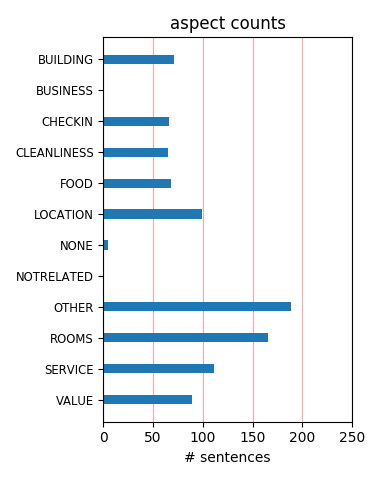
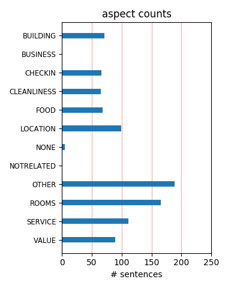

What a wonderful Hotel Stayed May 2- May 9th. The staff was wonderful, the pool I am still dreaming about. Older Hotel but clean and quaint. Make sure you stay on the pool side. Rooms are clean and the price is right. Would not hesitate to stay again.
Seedy location You get what you pay for at this cheap hotel. The rooms are small, the staff are unhelpful and the location is seedy, that is unless you need the services of the street-walkers in the adjacent red light district. Then you may get more than you pay for!
Excellent choice! Great customer service, Clean rooms w/ flat screen TVs and balcony, Perfect location, Lovely pool jacuzzi area, Awesome guest services--All for a Reasonable Price. You will feel Spoiled! I highly recommend this hotel resort and definately would come back! AQUA BAMBOO IS TRULY #1!
Great Value For everyone complaining about street noise and outdated hotel....You get what you pay for. You can have what you want at the Hyatt for $250 a night. I loved it for the price and location. There is street noise in every city, so you folks probably aren't from the city, didn't bother me.
love bamboo it was great stay for us, i would not recomend average hotel room as they are too small and there is noise from the street, however superior rooms and one bedrooms are very nice, breakfast is free and they serve it in the room or by the swimming pool, food was very fresh tasty, we are going back next year!
Fantastic! Our stay was the best! We were upgraded to the Penthouse suite and it couldn鈥檛 have been better. We loved it and my girlfriend was thrilled. She works for AAA and we leaned about Aqua Bamboo from one of the travel Managers. Thank you for making our stay the best ever.Mahalo.Dave Isaak and Jayne Hays.Seattle WA
not! for families We only stayed two nights and changed to another hotel. There was so much noise from the street that we could not sleep. Definitely not a place for children and families. Pool was shut down and one elevator was inoperative. Air conditioners were old window style units (very noisy). Do yourself a favor and book another hotel.
A Great Place to Stay The facilities at Aqua Bamboo Spa are more than acceptable. The beds were excellent. The rooms were spotless, and we truly enjoyed sitting on the lanai after a day of touring/sun on the beach. You couldn't ask for a more convenient location, and the each and every member of the staff was pleasant. I would recommended it to anyone.
A wonderful hide a way: This was our 2nd stay @ the Aqua Bamboo this year ~ why did we return ~ simply answered it is a charming small well run Boutique Hotel situated right in the middle of a very busy area:Hotel is clean ~ very friendly ~ updated rooms and lobby: We have recommended this hotel to friends and would stay there again ~ great location too!!! 1 block from beach and other venues!!
Enjoyed our stay We enjoyed our stay at the Aqua Bamboo. It is centrally located so very easy to walk to other sites for catching tour busses or just shopping. The room was very inviting and clean. The staff always had it cleaned when we returned for the day. We liked the computers that were available in the lobby to check our email. It is a nice service. The front desk was very helpful with any questions we had.
Great boutique hotel We loved the Aqua Bamboo...It is a well run, clean, well appointed hotel in a great location...two blocks behind the Hyatt Regency in Waikiki. The staff were all very friendly, especially the women who served the continental breakfast...checkin was easy, the desk staff were all very helpful, and the cleaning staff was very patient with our late sleep-ins. I would definitely stay there again..in a minute. Thanks so much.
Great Hotel! My mom and I wanted to get away for a while and chose to stay at Aqua Bamboo Spa. This was the best choice ever! The rooms were very nice and comy (having the robes available during our stay was a nice touch). The location was very convenient as it was within walking distance to everything (the beach, shopping areas, restaurants, etc). The staff was friendly as well. I guarantee this will not be the last time I stay at Aqua Bamboo Spa.
Great Hotel! My husband, 2 small children and I loved the Aqua Bamboo Spa. It's a very clean hotel and centrally located in Waikiki. The staff are so helpful and very friendly... they really make you feel like you are their special guests. They were very helpful with any questions you may have about activities, places to eat, etc. They are very attentive to your likes and dislikes... I can't rave enough about it! We would definitely go back there again!
great hotel and staff we arrived after a long flight from australia and were 4 hours early for check in. the staff were very friendly and got us our room within a few mins even though we arrived early. the hotel is well presented clean and comfortable, close to the beach and shops and restaurants, have rebooked again on 22-23june on our way home to australia. the supervisor zenie and staff are an assett to the aqua bamboo hotel. would recommend to anyone.
Aqua Bamboo This is a gem for so many reasons. Super staff, terrific location to Waikiki Beach, very reasonable on the budget, not a hotel to consider for only geting your night's sleep....it is a place you want to be. A beautiful pool area including jacuzzi, tropical plants, hip lobby area.Yet , the reasonable rates will allow you to discover the islandwithout that nagging feeling that you should be making more use of your hotel. Will I return? You bet!
fantastic experience! We booked this hotel based on ratings from tripfinder. We couldn't have been happier with our experience there. Our room was spacious, with 2 balconies. Front desk staff were always helpful and cheerful and gave us a choice of rooms. There were laundry facilities on every floor, which was very convient for our 8 day stay. Location was ideal, with great restaurants, bus nearby. A 4 minute walk to beach. We would recommend this hotel to anyone.
Loved the Bamboo! I loved the Aqua Bamboo and Spa. My husband and I spent 5 nights there and got a room upgrade at no extra charge. The location was excellent -- 1.5 blocks from the beach, and close to all the action in Waikiki. The staff were very friendly and helpful. The Thursday afternoon manager's cocktail hour with their signature Bamboozled drink was very nice, too. I would definitely come back here if I ever return to Hawaii! I highly recommend this hotel.
We will be back to the Aqua Bamboo The Aqua Bamboo is in a great location. It is close to the beach at Waikiki, it is close to shopping, and close to public buses. The hotel is a great value. The hotel offers amenities that enhance one's stay (newspaper, continental breakfast, weekly cocktail hour). However, most important is the friendliness and helpfulness of the staff. The personal touch made one feel welcome and very much at home. We look forward to our next visit.
Perfect! First time visitors to Waikiki we find this hotel on the internet. Clean rooms and hotel, nice staff, moderate designed rooms. Nice lanai, view to the beach, mountains and not noizy. Very nice pool area, and great price! Perfect location. We stayed at three diffrent hotels on our vacation and this was the best regarding the price - highly recomended! (warning for our second one atston waikiki beachside hotel, dirty, filty and moldy smelling rooms, and bad staff!)
Great stay at the Aqua Bamboo and Spa We loved our stay at the hotel. Our room, a deluxe studio, was very tastefully done in an 'Asian ' theme. It had reasonably good views of the city and the mountain side. The Hotel staff is very friendly and attentive. We also used their spa services which were terrific. I'd highly recommend staying at the Aqua Bamboo, if you're looking for something quieter off the main Waikiki strip and yet within 5 mins of walking distance to the beach.
great honeymoon I loved the hotel and the staff was friendly and accomidating. Great little view of the beach off the terrace. The pool was great and I loved the cabanas to shade me. I enjoyed a great massage and felt really relaxed, The only problem was the maid service often missed things such as clean glasses or cups. The maid didn't arrive till 5:00 or so right when we were trying to nap or take a shower from the beach, Over all loved the Bamboo and hope to come back on our aniversery.
Nice for the price Hotel was fine for the price. I would recommend. Rooms are small but clean and nicely decorated with all the amenities. My room faced the apt bldg next door which was not a pretty site. Staff was very friendly except on one occasion when I asked them to confirm directions. Good location. The spa is not a true spa, just a room next to the pool. Although there was a $69 special on a 50 minute massage, hotel tax and 18% gratuity was automatically added. Massage was average.
excellent condo hotel and very personable with the best service The property is very well kept and upgraded and canatrally located with just a few steps to the beach. Surrounded by shopping and nice restaurants.Pool area nice and quaint, they even have a barbeque area for your convenience and a boutiqish style spa.Rooms are very nice and decorated like someone's home.Very good amenities and continental breakfast included every morning and one night a week a managers cocktail/snack hour.Very family friendly.
Horrid Didn't actually stay here - it was too gross. Checked in, our room smelled like cigars, and was filthy. Looked at 3 other rooms, all of which were dirty and smelly. Old rickety elevator, gargabe in the halls, indifferent staff, strange layout to rooms, grimy bathrooms - not a nice place. Got all of our money back (very efficient I might add, like it happens all the time), and went to the Hawaii Prince, which is great. Listen to me - I know I didn't actually sleep here, but I looked at 4 rooms! All horrible!
Location great but rooms suffer. The hotel has a great location. Recent updating including modern lobby and outside pool area. I think they forgot our room. It was small and very dated. No chairs other than mismatched kitchen chairs. Kitchen area dated and worn. Bathroom fixtures rusty, toilet leaked and paint in room was minimal. We stayed for 4 nights and will not return to this hotel. However, the location was great, staff helpful and price is well under area hotels. The flat screen TV was new but not much else.
Was OK for short stay Room was OK. Had a 1 bed room. Somewhat smaller than I had expected. My stay was for 12 days. Room became VERY SMALL after day 4. The smoke alarm in the room went off at 2 am in the morn. before I had a very important mtg at 7am the next morning. The girl at the desk had no idea what to do, but she did move me to another room so I could finish my sleep. The Bamboo is good for a short stay and if you dont plan to stay in the room much. Very nice walk to the beach and other area around the beach.
Aqua Bamboo Not For Anyone I would not recomend this hotel to anyone. We stayed here March1 to March14 2006 and I was a bit concerned because of other reviews I had read and I should have listened. Everything bad they said was true, from the stained bedding to the ants in the bathroom and the run down rooms. As a added bonus it was almost impossible to get housekeeping to clean our room. we were lucky if they did it 6 times while we were there. The only positive thing I have to say is the front desk staff were very pleasent.
never had a problem when i book my trip i forgot to look up the bamboo for peer reviews.when i heard all the bad talk i was a bit scaredBut when i got into my room....it was awesometwo full bedsa bathroom with shower and bath and two sinksa kitchenettethe room was cleangreat locationstaff was awesomethe only thing i can see a problem is parkingbut everywhere in waikiki you have to pay so no worries2 block from the beachwhat else can you complain aboutthey clean our rooms soif you ask me to stay there again....for suream there!!!
Avg Room, Nice lobby/pool, good location Stayed at the Bamboo for a week last Dec. Were it not that I was attending a conference nearby, I would have tried a BB or something more cozy. Despite the claims that it's a boutique hotel, IT IS NOT. The lobby is kitchsy-chic and the pool area is nice but the room was definitely less than average. The full bed was nothing special, and despite the fact we had two balconies -- we hardly used them since it's downtown Waikiki and loud as hell. I was expecting more, even though I only paid around $115/night.
Loved the Bamboo The excellent service starts with check-in and only gets better. If you want an elegant hotel this is not for you, but if you want a comfortable hotel in the middle of town, this is it!!! The staff is great starting with the manager, Albert and going to housekeeping, in our case Teodora. Outstanding staff were - Angela, Joy, and especially Leonor. Make sure you meet all of them. If you want to learn a Hawaiian craft ask Leonor to teach you how to make a ribbon lei. We would stay here again and again.Tom and Diana - Lake Havasu City, AZ
Wonderful Hotel!! We stayed at the Aqua Bamboo Spa for 2 days. This is a wonderful hotel. Check-in/out was fast. Check-in staff (Dan) was very courteous and helpful. The hotel has key-card security access that limits only hotel guest past the main door after 11pm. Our room was very spacious and has a 鈥渒itchenette鈥?area, equipped with pots pans and dinning ware. The beds are big and comfortable to sleep in. Complimentary continental breakfast is of limited choice/variety (pastries and fruits only). This hotel is very close to Waikiki beach and shops. This hotel exceeded our expectations.
You get what you pay for We stayed here twice and enjoyed it both times. We decided on this hotel largely due to other travelers ratings (which were better at the time than they are now) amd enjoyed it enough the first time that we stayed there again when we came back 6 months later. Rooms are okay, they are clean. The hotel is in a prime location, walking distance to the International Market Place and Waikiki beach. I do reccomend that you get a room facing the courtyard and NOT Kuhio because the street noise is loud. For $79 a night, you get exactly what you pay for.I would definetley stay here again.
Don't Stay Here: Terrible Reception Staff We are very disappointed with the reception staff at the Aqua Bamboo. We are a family with several small children and had to sit in the lobby for five hours waiting for the room to be ready. We arrived at noon and they said checkin was at 3 and even though the room was vacated by noon we would just have to wait. We were polite and asked about once an hour but they just acted like they did not care. They made no effort to help us and seemed pleased that the room took until 5 PM to prepare for us. Terrible service. Don't stay here, or ask for a manager when you check in.
Birthday Celebration We just returned from our trip in Hawaii and our stay at Aqua Bamboo Hotel is excellent compared to those 5 stars hotel we stayed before.We have a very nice room with view of the ocean on one side and the mountains on the other side. The room is very clean and the hotel employee's are very accomodating, courteous and friendly.The pool is lovely and clean and we enjoyed staying and relaxing by the pool side.Locations is great, closer to the beach, restaurants and shopping and nite activities.Overall, this is the best hotel we have ever stayed in our family vacations. I would highly recommend to stay in this family friendly hotel.
Nice value, great location We stayed here from March 11-16 and were generally pleased. We had a top floor room with a great view of the ocean.The furniture is all new and there is even a nice size LCD tv and mini-fridge in the room. Yes, the bathrooms were a bit dated but they were clean.The location is fantastic and only a 5 minute walk from Waikiki beach.The front desk staff are great and very friendly. The lobby and pool area are nice as well.I've read alot of the bad reviews and frankly can't understand where they are coming from. To stay someplace else that was appreciably nicer would cost $50-100/night more.I wouldn't hesitate to stay there again.
Home away from home.... If you want a hotel that makes you feel right at home, Bamboo is the place to be. I stayed there with my family for a week and absolutely loved it. The staff there was excellent. They make you feel right at home. The rooms were equipped with everything we needed. The location was excellent as well. Block away from the beach, close to shopping, dining, activities. Tip: Be there at 5pm on Wednesdays. The General Manager, Joseph (whom is really nice by the way!) serves up their drink called the Bamboozle. And best of all, it's free! I would recommend Bamboo if you are looking for a more intimate property right in the heart of Waikiki. Thanks Bamboo!!
Noisy little haven I booked being specific about room needing three beds when we arrived there was only one bed. Simple mistake but not great when you arrive late at night. That was sorted to a room that seemed to be on the freeway. The noise from traffic was incredible, the balcony door and air-conditioner did not seal adequately, which did not help. Rooms can be described as clean but very tired, as are all the rooms that I saw.We had booked for 9 nights but could not cope with the noise and even a room change did not help matters.All amenities outside the rooms are fine as are the staff.We moved to a sister hotel The Aqua Aloha Surf Which is sensational and less expensive.
Wonderful Surprise! The Aqua Bamboo was a truly pleasant surprise upon arrival. Just 3 blocks from the beach, and great walking distance to anything and everything. All of the staff at the hotel were extremely friendly, and were more than willing to meet our needs. The price was good for what we got. Basic room, with small kitchenette and lanai. Didn't need anything more. Was cleaned on a consistent, daily basis, which is important! The room even had free WiFi access. The only downside was the price of parking at $18 per day. Didn't rent a car for more than a day because of this.Would highly recommend this hotel to travelers who need a comfortable place to stay, which is walking distance to everything you need.
Very comfortable beds! This hotel was great if you're looking for a comfortable place to sleep and a close walk to the beach. The staff was very friendly and accommodating. The rooms are nicely decorated, a modern bamboo Hawaiian feel, and beautiful bathrooms, much better than the average hotel. The only downfall is there are only 14ish floors, so don't expect to get an ocean view. I can't say enough how comfortable the beds were, as this is very important to us when we travel. You have to Valet your car, but since it's a smaller hotel you'll get your car right away with no hassle at all. We were in and out multiple times a day and never had a problem. We will stay here again, no need to find another hotel in Oahu!
Celebrating Birthdays Aloha Spirt at it's finest is what you find at the Aqua Bamboo Spa! From the moment we arrived to our day of departure, the staff were so wonderful to us. Joy, Leonor and Angela made our trip a fabulous one. We had business to conduct as well as quality family time to enjoy....we were able to accomplish it all.You feel like you're in your very own private paradise among the palm trees and plants surrounding the salt water pool and jacuzzi. Very nicely renovated rooms!Close to everything...Waikiki Beaches, shopping, dining, grocery store, International Market Place! Very convenient!We would recommend this property for small groups, families, honeymooners, and girl trips.Can't wait to go back!
Not what we expected! On our 10th anniversary and first time to Hawaii and expected something better than this. Entrance from street is not that pleasing, lobby has very low ceiling, elevator very small (hard to fit us and our bags in the elevator at the same time!!!), room had new furniture - but was moist/mildew smelling covered with sprayed cleaner, bathroom was VERY dated with dirty tub/sink/toilet, window in bathroom was open and let in lots of bugs before we arrived, pool very small, etc. etc. etc. Stayed only first night then moved to Ohana East - 1 block away from Aqua but in a lot better location and hotel was fabulous! Sure it cost a bit more, but it was well worth it for the 14 nights we stayed in Hawaii.
Had Better, had worse We decided at the last minute to fly to Honolulu over the Christmas break. While flights were no problem, there were very few hotels available anywhere in Waikiki. We knew nothing of the Aqua Bamboo but really didn't have too many other options. The hotel is a just a couple blocks away from the beach but, depending upon room location, you may not be able to see it from your room - our room looked directly into the hotel next door. The king size bed was really two twin beds pushed together. We considered moving to a room with two separate twin beds but the view was even less desirable than what we had. However, the room was clean (except for the refrigerator), the staff was friendly and the price was reasonable.
The Bamboo was Great! What a great little hotel! The lava rock fountain pool is surrounded by tropic decor which was relaxing and refreshing. The location it fantastic, block and half to Waikiki beach, tons of places to eat and shop. My room was on the 12th floor facing the ocean which gave us a great view. Make sure you don鈥檛 have a room facing the street side it will be very loud being the hotel is set on a main street. My room had a microwave and refrigerator which was nice being they bring you a continental breakfast every morning. The spa is nice and the front desk people are very nice and helpful. The only bad thing was the small full size beds; otherwise you can鈥檛 beat the value the Bamboo offers. I would stay here again鈥?br/>
Will be back next year for sure!!!! The representative at the front desk treated us like family; we felt at home from the 1st moment. We were offered flowers for my wifes hair, and fruit while we checked in. I loved the comfortable beds and the nice bathrobes for us in the bathroom (so, nice, I purchased one to bring home). Our housekeeper greeted us with true Aloha spirit, each and every morning, never saw her without a smile. The Bamboo serves a continental breakfast and every Thursday evening they offer the Managers Cocktail party, and I might add, you just have to try the Coconut Bamboozle! The pool area is cool and relaxing with tropical plants and a waterfall. They offer a spa area, which just put the finishing touch on my trip.
Made my trip I have stayed at the Bamboo several times. Everytime I have stayed, I find the staff friendly and helpful, making me feel welcome and comfortable. The rooms have been comfortable regardless of the class. The hotel is in Waikiki and I still felt safe and like I could escape' the noise and hustle and bustle by entering the relaxing atmosphere of the hotel, it's quiet safe pool area, and the calming atmosphere of the rooms. Weather it's been a one bedroom or a suite, the rooms are a comfortable size with nice decorations, which have a spa-like Asian motif. My stay has always been very pleasant and made my trip to Hawaii more relaxing. If there was ever a question or a recommendation I had, the staff would reply with courteousness.
It was great I had a good time at the Bamboo.. The staff was very nice and helpfull.. At first I was uneasy about staying at this hotel. By looking at the pictures that other people provided.. The hotel was not the best but the room was clean. Housekeeping came in everyday and changed our bedding and gave us new towls in the bathroom. They did a very good job with keeping the place clean.. No the hotel is not up to date but it was nice.. It was close to everyting food the stores and the beach.. What more can you ask for when everything was in walking distance..There was not that much street noise.. But I feel if u wanted to go to quiet island you should have went to Maui.. So I disagree with all the negative reviews that I read before I expierenced the hotel for myself.
Wonderful Stay at the Aqua Bamboo My stay at Aqua Bamboo was more then I expected. After find out about the hotel through my Entertainment book I was a bit nervous booking with them because I had never stayed there before. Upon my arrival I was very surprised. After walking into the lobby and seeing how nice it was, I only started to imagine how nice the rooms were. Let me tell you the rooms were just was wonderful as the lobby. My three night stay was amazing. A 2 minute walk from the beach and great food in all directions, I could not have asked for a better location to be in. All of the employees, esp the guest services manager, were all very welcoming and friendly every time I left and returned to the hotel. I will definately be returning to stay at the Aqua Bamboo in the future!
Huge Disappointment I chose this hotel because of it's high ratings and glowing reviews on trip advisor. I was expecting a special hotel nearer the beach, but two blocks behind the Hyatt is not near. The only glimpse I had of the beach was if I craned my neck just right from my 8th floor One Bedroom Superior. If this room was superior, I would hate to see the inferior.The street it was on was also very busy. It just wasn't my vision of paradise.The staff was nice and smilely, but that hardly makes up for the disappointment of the tiny pool poor location. We hung in there for two days, but were pretty miserable so we checked out and went to a different hotel for the balance of our stay on Oahu.I am not sure what people are used to when they give 4 and 5 star ratings to this place. It is a two star at best.
Deceived When arriving to Hawaii we were a little lost. We finally found the right street and jokingly said oh my god what if that is the hotel, wouldn't that be the worst Well it turns out it was. The outside of the hotel is run down and dirty, the rooms actually have these air conditioning units that we call window shakers One of the balconies outside had a washer and dryer sitting on it. We decided to stay at the Hyatt down the street. We could see the hotel from our new room and let me tell you it looks worse from above. The hotel ended up charging us $450.00 anyways. After calling them about this I was told that I should not have judged them by the outside. This sounds crazy to me seeing that the outside is the first thing people see. I guess I will just have to accept that I got screwed and hope that my letter helps someone else.
A Little Short on Comfort This hotel oversells itself. It describes itself as a spa and newly renovated. I disagree. It looks like it got a make over at a yard sale. We had a studio unit with kitchenette. Hot plates no microwave. Extra small coffee pot. Only one nightstand on one side. Hot water valves working improperly left us fiddling with the temperature to avoid getting scalded. One towel per person. The TV was an old model with limited channels. Internet access through ethernet cable. Parking is available in garage on 1st come first serve basis. Only 8 stalls available to the hotel. Barely get out of your car squished together type parking. They charge you $15.00 a night. The staff is a little sour. I felt a little jipped. The pool area is nice but it looks much better on the website than it actually is...Thought you should know...
Loved this place I had read some earlier reports on the Aqua Bamboo which were not very complimentary, and I even contacted the hotel direct airing my concerns. Don鈥檛 know why, this hotel turned out to be one of the best, friendliest, most comfortable home away from home. My daughter and I had booked 9 nights at the Aqua Bamboo, and 6 nights at the Sheraton Princess Kauiliani, well when it came time to checkout we simply did not want to leave. Our room was great 2 x double beds, large flat screen TV, great shower/bath, washing machine at the end of the hall, a great swimming pool, free internet, fresh apples all day every day, yummy muffins and pastries for breakfast, and lovely reception staff and service staff. I don鈥檛 know what I was ever worried about WE LOVED THIS HOTEL! And I loved the lounge coat thanks Aqua Bamboo we had a great time
A Most Enjoyable Holiday Aqua Bamboo Spa September 10 2008 Well have just arrived home from our first time in Hawaii. And what fun we had there with our grown family. The Aqua BambooSpa was great it was very friendly,it also had a great feel to it. We stayed in one of the unit's over looking the pool area which was beautiful with all the palm's. The staff were great friendly all the small touch's that the resort had,like the apples in the foyer the newspapers by the lift's,the use of the computer's the lovely breakfast by the pool. We also loved the Thursday afternoon's drink's nibbles with staff other guests,it was a fun time. Leonor made us feel very at home the Hawaiian way. We have already started to plan another holiday back there soon the Aqua Bamboo Spa will be on our list for sure.Aloha The McNamara Family Gold Coast Queensland
Loved it! I have been meaning to write this review. We stayed at the Aqua in October 2006 and were there during the earthquake. The staff were excellent. My only suggestion would be to have sufficient flashlights for each room on hand in case of a future emergency.Our room faced the Monarch but we had partial views of the ocean and the city. It was a bit noisy but the hotel cannot control that. If you are expecting the Ritz, you will be disappointed. We got what we were expecting. Although the room was worn and tired, we were pleased with it. The only problem we had was the bath/shower didn't drain very well. The pool area is very nice and we enjoyed how it felt like a little oasis from the city - the greenery surrounding the area just makes you feel like you're not beside a major road.We will certainly stay again, if we ever return to Honolulu.
Disappointing United Vacations billed this as a four star hotel for an excellent price with fifth night free. We had arranged for two double beds, they tried to pawn off one of them as a roll away. The view was non-existent. The decor outdated, and clearly it had been a smoking room at one point because it was still stale.The pool area was pleasant enough, and the location was fine. Do NOT rent a large car if you plan on using their parking lot under the hotel. (United, by the way, had neglected to tell them that we had a rental car, so we parked a few blocks away the first night, at a sister property).Don't expect much out of the housekeeping staff, even with tipping nightly.If all you're going to do is leave luggage in the room, it's OK, because of its location, but keep your expectations low. The promo photos look NOTHING like the hotel rooms.
Fantastic, Affordable, Only 1 Block from Waikik Beach Excellent, reasonably priced but superior accomodation only 1 block from Waikiki Beach and convenience stores, banks, etc only 5 minutes away - bus stop acrosss the road!Wonderful, dependable and generous complimentary breakfast daily.Free in room safe for valuables.Attentive, knowledgable staff 24 hours a day.Complimentary Internet acces in rooms plus complimentary internet access (for 30 minutes) in hotel lobby.Wonderful, private, tranquil and soul renewing garden/pool area (cold and spa).Excellent service by Cathy (breakfast and room service), Daniel, Zennie and Howell (Bamboozle evenings)!I cannot speaky highly enough of this hotel and would be happy to recommend it to friends or anyone else who were to contact me for further feedback on my experience!Kindest regards,Richard Lambert+ 64 27 294 4280
Would not stay again We stayed here early September with a group of friends, each couple had their own room, at first, we were really attracted to the great price and the pictures on the website looked good, however, don't be fooled by the pictures. The room does not live up to the expectations of the pictures. The kitchen and bathroom were really old. The room smelled like mildew and the sheets were dirty and the towels were stained. After complaining first about the dirty bed sheets, they did not replace it but actually reversed the sheets upside down so we wouldn't see the stains but we still saw the stains because we had blood stains on our sheets!! Then, the towels were stained with yellow and dark gray marks. Overall, the staff was nice but I would not stay here again ... the price was cheap but I think this place is overpriced for the crappy room that you get.
Great value, nice decor We loved our stay at the Aqua Bamboo! Thanks to another tripadvisor posting we got a Studio Deluxe with a pool view, so we had a great view of the lovely pool area and it was quiet. The area wasn't seedy as far as we could tell. We were often walking around at night, but felt very safe. It's in the heart of Waikiki and very near the beach. We have no complaints about the room--the amenities weren't as luxurious as some of the bigger chains, but it was clean and nicely decorated. It was also great having a kitchenette and refrigerator. We really liked the hotel's decor--a very Japanese/Thai look. The staff were very helpful and nice--we'll definitely be back there. Generally it's a GREAT value for staying in Waikiki. (Note: mention the deal in the Honolulu Advertiser and they give you 50% off. Our deal was $89/night for a Studio Deluxe with kitchenette).
Bad with the Good In April of 2005 I stayed at the Aqua Bamboo for 7 nights. The room was dirty and needed cleaning and upgrading. After the initial shock and calling for housekeeping, we grew to love the location. It is 2 blocks from Waikiki beach. The pool area was nice and we had free massages from the poolside massage therapist. They barely accepted a tip. It was nice to sit by the pool in the afternoons. The continetal breakfast was either a piece of fruit or danish either in the room or poolside in the A.M. They have a free cocktail night called the Bamboozle and the drinks were great. It was a bargain..for the package deal we paid..but I'm not sure I would stay here again unless I had an upgraded, cleaner room. It is what it is...we had dinner and spent time in the much nicer hotel bars/lobbies near by. The location is great if you don't spend alot of time in the hotel.
Book somewhere else After reading every review and checking out the Bamboo's website pictures directly,I decided to book a week here.From my understanding the hotel had been completely renovated. This is not the case at all.The first room we were supposed to stay in smelled so bad and the kitchen was original 1960's tile and oven/range.We asked for a different room which was a little better but not much.The showers had mold growing in them.The balconies that we had faced Kuhio St. so it was noisy,not to mention they were so small we had to scale the railing just to sit on the bench.They were also doing repairs on the front drive so all day it was nothing but jackhammers going.We didn't find this out until the day the work started. The pool area is about the only nice feature of this hotel.I will never stay here agin or recommend it to anyone. Stay next door at the Pacific Monarch. Much nicer.
Aqua Bamboo - the best kept secret in Hawaii Re ' The Bamboo Hotel in Waikiki This was one of the nicest hotel experiences my husband and I have had in Waikiki . We were delighted with everything--but the very best of all was the wonderful staff ! They were so kind to us-far above the ordinary ! Thank you to them all--for the lovely surprise Anniversary Flowers, chocolates and Champagne-we enjoyed them all! Our room was very comfortable -and kept spotless by the people there--Continental Breakfast enjoyed by the pool each a.m was just right ! Special thanks to Leonor Wong-who was so happy to greet us each day--and always had time for a chat whenever we saw her. This lovely lady even made us two special Mango Cakes to take home with us. Leonor--they are delicious! We have spent many holidays in Hawaii--and this hotel has to be our favorite !! Mahalo to you all--and God Bless Gordon Mona Mason
It worked for us We read all the reviews before we booked and decided to take a chance as we got a fantastic rate. All in all it worked fine for us. The location is fantastic-- right on the busline about 3 blocks from the beach, the staff very friendly, the 2 guest computers were great, loved the little pool area with CABANAS!, room size was fine clean, toiletries were excellent, huge TV . Air conditioner was noisy, it was hard to keep the room dark, the bottom sheet didn't go all the way to the end of the (double) bed, breakfast was oranges/apples/bananas, canned pineapple juice, blueberry muffins and one other kind of pastry-- sort of a dinner roll with a small amount of apple or cream cheese filling smack in the middle. You had to pay for hot chocolate. Would we stay there again? In a heartbeat!! If you don't expect the Ritz and understand what you are getting it's a great deal for Waikiki.
We were "bamboozled"...... Checked in for one night only. We paid for an upgrade pool view, but were unhappy with the room for various reasons. The other sliding glass door view was of someones dirty mattresses sitting on their balcony. The bathtub was full of rust stains and the windows in the bathroom were broken, thus letting in all of the warm air so the air conditioner was worthless. The carpet was filthy and had been patched in various places. The lobby looks great, but obviously all of the renovation went into the entry of the hotel. We felt the hotel was misrepresented on the site; it is not newly renovated and the interior of the room was very shabby. The location is convenient to many things, but it is not worth the money. We moved after one night for the remainder of our vacation to the Hyatt and we were very happy. Bamboo needs to be more honest about their hotel. We were bamboozled.
Home away from home at Aqua Bamboo We enjoyed the staff especially Leonor Wong who went out of her way to not only spend time with us but also to make sure our visit was special. We felt right at home. The accomodations were also tastefully done with recent upgrades to the room that included flag stone flooring, new wooden cabinets, granite counter tops for kitchen and living room. The spacious Lanai also gave us extra room to spread out since the weather outdoors is always accomodating. Even with 4 of us we never felt crowded or cramped in the room.We enjoyed also the continental breakfast which they always found fresh fruit or pastries which we could enjoy. The bamboozle night where the staff had a special reception for guests and was fun too.We were so thrilled with the Aqua Bamboo and staff that we cancelled our stay at Sheraton Princess on our return to Honolulu for our final 4 nights to Aqua Bamboo.
Had a great time at the Aqua Bamboo We had a great time at the Aqua Bamboo. The room was small, but adequate. The pool area was very nice and a relaxing place to wind down in the evening in either the pool or hot tub. The hotel was clean and the staff was very nice and attentive. We didn't have a good view from our room, but some rooms overlooked the pool area, which was a nice view. It was still enjoyable to sit out on the lanai and enjoy the weather, even without a view. The location was wonderful - it was a very short walk to Waikiki beach, stores, restaurants, and whatever else we needed. We even walked around and down to the beach at night and felt very safe. There were two computers in the lobby that we were able to use, which was very handy. They had some nice little extras as well, including a free massage and a free happy hour on Thurdays which was fun. We would definitely stay at the Aqua Bamboo again!
Love the Bamboo! Can't wait to go back.... :) I LOVE the Bamboo! I was lucky to stay there for 9 days along with 2 other friends and we all had a FABULOUS time... Our room was on the 11th floor facing the ocean, my favourite was waking up early each morning to the sun coming in from the balcony and being able to lay in bed and enjoy a Great view of the water and the surfers! It's in the perfect location, walking distance to everything you could want or need! It's close to the beach, it's near great restaurants, and also Wonderful shopping once the sun goes down...Another thing I love about staying at the Bamboo is the pool, it has a cute waterfall that drowns out any traffic going by and it's usually not crowded like larger chain hotels.... Being a boutique hotel it has a warm cozy feeling and the hotel staff is very helpful and friendly with any questions we had! I'm already looking forward to my next trip back.... :)
Hooray for Bamboo we stayed at the Aqua Bamboo for 9 nights during our honeymoon trip to Waikiki and had such a great time!Upon arriving at the hotel we were surprised to have a bottle of champagne and box of chocolates delivered to our room, since we were honeymooning there.My wife and I are into healthy cooking so we enjoyed the in-room kitchenette, and the stainless steel, gas-grill on the pool patio. The rooms are clean and there's a nice flat screen TV on the wall. Thursdays they have a free cocktail hour with a nice little spread of fruit and cheese. Plus, with the price of fruit in Waikiki, it's nice they provide free apples for a snack anytime of day.Our guest service agents, Leonor and Angela, were great. They talked to us every morning at breakfast to make sure we were having fun and give us tips on any attractions we were planning to see. We'll definitely be returning and can't wait for our next trip to Honolulu.
Great hotel in Waikiki The Aqua Bamboo is just two blocks from Waikiki beach. The rooms are spacious and clean. and decorated with simple elegance. We booked a one-bedroom suite for our family of four and we had plenty of room to spread out.The staff were terrific, from the front desk to the room attendants! All were friendly, gracious, and very interested in making sure our stay was comfortable.Aqua Bamboo also serves a wonderful continental breakfast every morning. And, they have onsite spa services,a pool in the beautifully decorated patio, free daily newspaper, and 24/7 coffee or hot tea. They also have onsite coin-operated laundry facilities.The surrounding area is safe and just a short walk in any direction to shopping, eating, and beaching activities. A bus stop is across the street although we did not need this. We were very pleased with our hotel experience and couldn't have asked for nicer staff who know all about the Aloha spirit!
Do not believe the website pictures Just returned from Hawaii and stayed at the Aqua Bamboo and Spa. Caution: The pictures on the website is false. Every guests that we came in contact with complained about the website advertisement compared to the real thing.The first room had roaches crawling around. The staff issued us a new cleaner room with a two hot eye stove top and no microwave. The parking garage with maybe ten slots at the price of $15 per night is awful. This hotel has twelve floors and only an average of ten slots parking garage. Also, the garage is awkward and can possibly wreck the car if not careful. The space is not adequate to pull in or back in. The continental breakfast for two people is a one tiny muffin, coffee, two Hawaiian can drinks (not even 100% fruit juice), and two yogurts. On a positive note, the staff is extremely friendly, Kuhio Avenue has a lot of restuarants and stores, and the walk to the beach is only two blocks.
Great Location for Budget Minded Traveler Had the priviledge of staying at the Bamboo on a recent vacation to Honolulu. The hotel is clean and well managed. The front desk staff was professional, attentive and courteous. The lobby and pool area are updated, well appointed and pleasingly decorated. Our room was small but comfortable...typical of most older buildings. You can't beat the location unless you want to pay 2-3x more for your room right on the beach. Top notch, elegant or fancy wouldn't be words I'd choose...but for a budget minded traveler looking for a clean place to sleep, bathe etc... you've got one. Run your air conditioner to kill some of the street noise that is abundant everywhere in Honolulu. The higher floor rooms obviously are better for this as well. Traveling by profession...I found this to be a very acceptible alternative to the high priced mainline hotels leaving more $$$ for the stuff you really want to do and see in Hawaii.
Our hotel room was robbed! My first visit to Hawaii was absolutely terrible as a result of our hotel room (penthouse suite) was robbed on our first night! Fortunately for my family and I, we weren't in the suite when the robbery occurred. All of our valuables were stolen (i.e. laptop, two GPS', iPod's, family jewelry, handheld game systems, etc.). I'm curious as to why only these items were taken when there were flat panel TV's, DVD players, and CD players in the rooms that were capable of being taken also. When we brought the robbery to the attention of Aqua's staff, they appeared as if they could care less. Being the hotel's first robbery, I would expect to see embarrassment, remorse, sympathy from the hotel staff and MANAGER. NOTHING. Were were left to fend for ourselves. That same night, we left immediately and headed straight to the JW Marriott where we were treated much better. Be forewarned. Things are not what they appear to be at this hotel.
Great location, the rest is not so good Just returned last night after a week at the bamboo. I'll keep it brief and to the point.CONSThe bathroom smelled of urine, the room of mildew. FREE Breakfast consists of a tiny muffin, a can of hawaiian soda or iced tea, and a yogurt. The pool is tiny, the hottub very intimate if more than one person is in it. The balconies facing the street are so small your knees rub the railing sitting on the bench. Kuhio Ave is rife with prostitutes and drug dealers after dark.PROSBeds are comfy enough, only 2 blocks from Waikiki beach. Massage services was a good value. Don't throw away the Diner's Club coupon book they give you, you will save a lot of money at great restaurants and attractions with it. High speed internet was free (in the room, not in lobby).ADVICEReserve parking ahead of time if possible. Very limited parking spaces, you don't want to park 2 blocks away.Probably not the worst budget hotel in Waikiki area, but substandard.
Could not have asked for better The Aqua Bamboo was just stunning, especially the foyer and the inner sanctuary the pool was a little cold but the warmth of the spa made up for that. the location in Waikiki was fantastic 1 block from the beach. Our room the studio deluxe was everything we were expecting, the room was it was very clean when we arrived and the cleaning service we received over the 10 days we were there was just as great. The king size bed was very comfortable and the view from the balcony was beautiful. Being provided with the TV in the room was well welcomed after long days touring the Island. The service provided by the Bamboo staff could not be faulted, Joy was so lovely and approachable she and the other staff really made David and Myself feel very valued and welcome. The complementary breakfast every morning was a great way to start the day and the take away breakfast option is also a great service.We were extremely happy with the Aqua Bamboo. Lauren Marett
We were disappointed! We had a bit of expectation about the Bamboo based on the reviews here and the pictures on their website, and so we very were much let down when we arrived at the room in person:- Our room (superior studio?) was small and very basic. - There was a kitchette right next to the side of my bed literally. I was staring at the sink and fridge sitting on the bed. - There was no lanai.- The bathroom was old and not as clean as could be.But what made us leave the Bamboo the day after we arrived (instead of staying for the next 6 days) was that the tub didn't drain well, even after we took off the drainer and exposed the pipe entirely so that water could drain better. It didn't. Bath water sat in the tub for a very long time. Two people will not be able to shower back to back without standing in a tub full of cloudy water.The saving grace for the Bamboo was its staff and people. Everyone was courteous and so nice. And the lobby was much better looking than the room we were in.
Loved the Staff and most of the Hotel but the bed was way to small I was pleasantly surprised upon arriving at the hotel. It was very clean, well cared for and very nicely decorated. The staff especially Christina was the best. I have stayed at Aqua properties before and every time the staff was great. It was the Ocean Tower and Leanor was the greatest which I thought no noe could be any better but I was wrong Christina made us not want to leave to come back home. I would not only go back but it is the only place I want to stay when I come to Waikiki which I come at leaste once maybe twice a year. I think more hotels should actively look for employees like Christina to hold on to the people you that have already stayed at your hotel and you will not need any new guest. I also stayed at the Ohana Maile Sky Court and I do not remember any thing about the hotel, staff, or property except over charged for everything.Do yourself a favor stay at the Aqua Bamboo Hotel and Spa you will not regret it at all
Nice Stay We didn't know what to expect at the Aqua Bamboo, but we were pleasantly surprised. It has recently been renovated and the foyer was very modern with an Asian feel to it (bamboo theme). The pool area was very relaxing and never crowded. The only negative comment for this area would be the size of the hot tub. only 4 people could squeeze into it at once. The rooms are also renovated and in very good condition, comfortable and clean. We stayed in a room with a full kitchen which was very handy for a family of four. If possible, request a room at the back of the hotel because the rooms at the front get a lot of noise from the street. The hotel is only a block away from the middle of Waikiki beach and we had no issues walking there with 2 young kids. The complimentary breakfast consisted of muffins, pastries, apples, bananas and juice. Nothing fancy but adequate for the kids. I chose to eat a healthier breakfast prepared in my room. The staff were all very friendly and helpful. They made our stay very enjoyable.
loved it, great service checked in July 19th - 26th. Reserved a one bedroom w/ full kitchen. Were allowed to upgrade room. Yes the rooms are on the older side with furniture outdated BUT the rooms are clean and the staff is fantastic. We asked tons of questions they answered all of them gladly. Breakfast is fun delivered to your room - coffee, can Hawaiian juice, yoghert, sweet rolls too. Saved us lots of $$ though we also brought cereal and bought mild and bread at the grocery store. Pool was small but clean and it is salt water, Water fall makes it relaxing, lounge chairs have comfy padding, tranquil area. Lobby is nice, quiet and the free apples were a hit with my kids. Walk to beach is only a few minutes, ABC stores out every turn, close to lots of places to eat (don't miss the plate lunch around the corner - across from the Pacific Monarch) Street noise is loud as previously mentioned but does quiet down when The Bus stops running. Never saw street walkers - EVER! Would recommend to families, singles not sure about honeymooners though....... Free internet is great too.
SarahAnneMarie My Husband and I were looking for a nice place to stay within our budget in Waikiki for our honeymoon. Aqua Bamboo and Spa was the perfect place for us. You are a short walk away from everything you can think of. Its perfect!I contacted Aqua Bamboo to let them know it was our honeymoon and they went above and beyond!We arrived to the hotel and were greated with beautiful leis, fresh pinapple juice, chocolates and champagne. Leonor is the guest service manager who made everyday in Waikiki a memorable one. She would bring us fresh flowers, fresh fruit, and a nice aloha hug everytime she saw us! We stayed in a studio kitchenett. The bed was amazingly comfortable, and the lanai is nice to sit out on first thing in the morning. Everyone at the front desk was always nice and friendly. I highly recomend renting a car for a day and going up to North Shore, specifically Waimai bay and Halewa (sp?) Both amazing for snorkling, surfing, and cliff jumping!! If you want to stay in Honolulu you can get a shuttle to Hanauma Bay to snorkle which is also amazing but go early cuz it gets crowded around noon.
Great Value Booked this hotel directly through the Aqua Groups website after I found it through a 'wotif' style website. Saved approximatly 55USD per night by booking it on the Aqua website itself. Room: Good size, could of used a couch (would of fit). Plenty of cupboard space. Two balconies, one with view of the pool. Nicely decorated with a comfortable bed, good T.V and room safe. Kitchen bathroom very outdated and slightly grotty looking, however clean and functional.Pool: Small but nice surroundings and well kept. Only used it once however, much better off down at the beach. Breakfast: Free continetal, good quality muffins etc. Service Staff: Reception not so friendly but very helpful and did their job well. Cleaning staff etc very friendly and great job. All staff happy to assit in problems and give advice of local activities etc. Free internet access in lobby.Overall I thought this was a great hotel for the price, the room was nice and comfortable and the service was great. My only complaint with the hotel would be parking - small and between two sites (opposite eachother) and 19USD a day. Rip off!
All you need in a hotel! I was very afraid of staying at this hotel because of some of the bad things I read on here, but there was nothing wrong with this property! My boyfriend and I stayed in a moderate room from the 2-9 of April. Upon arriving we felt very welcome. The staff is excellent. When we first arrived we had a problem locking the door to the patio and as soon as we let Howel know, he came up and fixed it. Also, on our way out the door to dinner the woman at the front desk stopped us and told us she forgot to give us our bottled water, we thought that was extremely nice of her to remember. Our room was on the 12th floor. It was a little dated and small, but the balconies and the views made up for it. Our full sized bed was right next to the sliding glass door, which was great for sunny and breezy afternoon naps! We had plenty of closet/drawer/counter space for all of our stuff and the TV was nice. The bathroom was average. The only thing that bothered me was the carpet because it felt old under my barefeet...but I got over it. The pastries at breakfast were great and the cocktails on Thursday night were excellent (we made them when we got home!). Overall this is a great hotel and by the sound of drilling and hammering it's going to get even better!
Honest Review Location: Very good, close to stores, bus stop, trolley, beach, restaurants, and attractions within walking distance.Front Desk; Everyone was very helpful, friendly, we were accomodated with our requests like a microwave and folding bed.Housekeeping: Friendly, helpful, accomodated us with request for extra towels and plastic cups.Rooms; The decor was dated no doubt. However, we checked out trip advisor reviews before we left and knew basically what to expect, The room was just basically a place to sleep in, clean up and watch tv. You could hear the traffic outside but that was to be expected being on Kuhio Ave.Pool Area: Small, quiet, nice jaccuzi, cold pool water, relaxing, nice wood furniture. Breakfast: Coffee's, tea's, muffins, juice, apples, bananas. I would suggest switching muffins with something else every other couple of days. After a 10 day stay its too much. However, our daughter loved the muffins. She wants the recipe. We had a danish type bun after our second day there. Apples were available all day long in a bowl at the front desk, and coffee, tea, and (speciality coffee's for $1.00 ) were available in the back lobby area. Internet: Free for 30 minutes to guests in lobby area.If I wanted to stay somewhere higher end I would have gone to the Outrigger on the beach or elsewhere.
Bamboo Bummer The Aqua Bamboo has a beautiful website, which I felt was misleading. The lobby area is beautiful and tastefully decorated; however, when we got to the third floor, things started to change. It's very dated and dark in the hallways. When we got to our room, we became disappointed. The room was very humid and smelled like mold. The air conditioning ran for an entire week and was rather loud. I just felt like the room wasn't very clean. Every time we took a shower, the water leaked onto the floor of the bathroom. Our view was of all of the balconies of the apartment building next door. This included their clothes being hung out to dry. It felt very third-world-ish.Since this was a family trip with our son, there were three of us in the room. We informed the housekeeper of this and had asked to get three towels in our room on a daily basis. Our stay was six nights long, and of those six nights, we had to ask for an additional towel on three different occasions.There were a few nice things about the hotel: the price, the proximity to the beach, the continental breakfast (which was included with the price).I would not book another stay at this hotel. Next time I go to Waikiki, I will save enough money so I can book a more-expensive room (which it seems like the old saying is true here: You get what you pay for).
Great place, but a bit worn The hotel is a great value for money and with that said, do not expect luxury. The rooms are clean and spacious, but - at least in our room - the furnishings were a bit worn and dingy. They were more old-motel like than hotel-in-Waikiki like, which was a bit incongruous with the brand new flat screen tv that was in our room. The location was great - only one block from the beach and it was near an excellent sushi restaurant called Morio's Sushi (not a fancy place, but really excellent sushi). We paid under $200 for our room during really high season and that included two one hour massages. The staff was friendly and helpful. The massages were very good and the massage area was peaceful and well appointed. The bed was comfortable, but not stable enough for my liking. If you wake up whenever your partner moves around if the bed isn't absolutely still, then you might want to opt for two single beds. The bathroom was a bit small with little space to place one's toiletries. I liked the lobby - it was retro and unfussy. The pool area was small, but delightful and the architecture of the hotel is interesting. Overall, we had a very nice stay here and would stay here again or try one of the other Aqua properties. I should also point out that I believe that many rooms have been and/or are in progress of being refurbished.
A hidden gem for anyone traveling on a budget! Unbelievable value for the money. I stayed at three different hotels during my stay in Waikiki including the #1 ranked hotel on Trip Advisor (Hotel Renew - an Aqua Elite Hotel) and a similar-priced hotel called Resortquest Waikiki Sunset, and I was by far impressed with this hotel. They let me check-in my bags early in the morning while I was out and about in Waikiki. They also answered any questions I had including a place to rent a scooter. Later that night, they let me park my scooter free-of-charge. The room itself is smaller than the others I stayed at, but it never felt that way. It was modern in every regard- except for the bedding. There was a large flat screen TV, a desk with an Ethernet cable for my laptop, a mini refrigerator, and a microwave. It even had a small balcony! (Don't expect a great view though). I stayed in a double on the 10th floor because I was traveling by myself so I can't speak for the other rooms, but this hotel was perfect for me. It had everything I needed for less than $100! I would highly suggest this to people looking to travel on a budget or single travelers. The double rooms are cheaper and if you're with a friend or significant other you should consider it to save money.Bottom line: this hotel is clean and modern, perfectly situated near everything in Waikiki. Definitely a hidden gem.
Great Enjoyment To stay longer would mean to continue to enjoy Aqua Bamboo Spa forever since its worth every bit of it. Not only does it have bigger beds than other hotels but its prize beats them all when breakfast is included and all of those serving you makes their help with a big smile and with much love. Its truly a paradise with some views to the beach and the surroundings. The place was just renovated two months ago, that in itself makes it of AAA value.Whenver you have a question they surely know the right answer whether your lost or need to find places of adventure and swimming. We got more than what we expected especially when your vacationing with your parents. No parental control with me since I'm older, but the place surely makes your family feel part of the city and country. The Hawaian culture sits within the service given and with the pool and spa surrounded with plenty of natural vegetation and decors of bamboo.The place can be filled with guests, but it never feels congested as with those more popular names or bigger hotels. You really have plenty of parking in the vecinity as well as here in a more secure form. The place cannot be any more central since within two blocks your closer to the beach, shopping center, and the mall. The location, the people, the service, and the laughter will always stay close to your heart. I cannot wait to go back again.
the Bamboo rules I loved our stay at the Aqua Bamboo. Our room was clean, stylish and lovely. (a studio deluxe. smallish but perfect , great balcony, big bath, kitchenette, big tv, fantastic comfy bed.)The staff were amazing. always really kind, helpful and friendly. One time I needed to make some international calls and rung the front desk to check on their international rates. She advised me that it would be heaps cheaper for me just to pop over the road for a 5$ phone card, as their rates were much higher. There were lots of other occasions where the desk staff gave us great tips and helped us out. I guess they just all seemed like really lovely people. It sounds really corny to say that I understood there what the spirit of aloha was all about. But I did. the breakfast was great - muffins, juice, fruit, coffee and the newspaper - nothing spectacular, but a perfect start to a day at the beach or wandering around.the pool is fantastic - salt water with a waterfall. a little hot tub beside it, a sauna and lots of pool chairs. It felt really good to be in a smallish boutique hotel, rather than one of those vast beachfront towers. More personal. More fun. The Bamboo rules! The lobby smells like flowers. It's sleek, well designed and clean. It's in a fantastic spot and the staff are the nicest people you could wish to meet. Like someone else wrote. Sshhh. Don't tell anyone.
Needs some changes, but would recommend I was pleasantly surprised about some very basic amenities which other hotels don't offer. It was wonderful to have two computers available for usage 24/7. There was also coffee and tea available in the lobby 24/7. Between 7:30 and 9:30 a.m. there was free fruit, juice and some type of muffin or sweet bread each day. I hope that first time tourists know that this is a rarity.My room was kept clean every day! When there were times housekeeping forgot something such as toilet paper, etc. it was delivered immediately! I found a few small coakroaches in my room. The front desk offered to spray w/pesticide the next morning, but I opted instead to buy sticky traps at the local grocery store: though they weren't that costly, I was somewhat surprised that the personnel at the front desk didn't offer to reimburse me (perhaps they weren't authorized to). Many of us cannot tolerate the fumes from pesticides!Location of the hotel was great! Front desk employees were friendly and professional. Daniel was especially kind and helpful; though all staff was very kind and helpful including housekeeping.Suggestion: how about Pay Movies? My trip was mostly business, so when I returned to my room it would've been nice to have the option to purchase a movie to view. Overall, I enjoyed my stay at this hotel and would definitely recommend it to my friends and colleagues!
Amazing upgrade at the Bamboo!! We stayed at the Aqua Bamboo for the first night of our honeymoon, since we were in Oahu for one day before flying on to the Big Island. Our stay was excellent... but I will say that it probably was not representative of the typical stay at this hotel. We had reserved a package that included a standard room, rental car and parking for about $189. We arrived at the hotel at about 2:30, and were told that our room was not ready. The check-in time was 3:00 so this wasn't a big deal. We wandered around Waikiki then returned to find that our room was the Ahi'i Suite. I don't know precisely why we got this TREMENDOUS upgrade, but I was very happy with the room! Here's why: it was 2,500 square feet (the entire top floor of the hotel), had a balcony that went almost all the way around the outside, it's own hot tub and sauna, washer/dryer, living and dining rooms, full nice kitchen, two bathrooms and two bedrooms (ours was a king bedroom, the other might have been a full but we didn't really go in there). When we returned from dinner, the manager had left us a bottle of champagne. Wow. Like I said, our experience might not be typical but was amazing.The location was great. We had a good time wandering around Waikiki. We had breakfast at the nearby Hyatt which was quite tasty. I can't comment on the maid services since we were only there for one night, but our room was very clean when we arrived.
Bamboozled My wife and I stayed at this hotel due to a budget we were trying to keep. The hotel ran us around $100 a night and seemed like a great deal considering the location. In Honolulu all hotels are a little dated and most of them have been reinvented through remodeling to a more modern chic appearance and this is the case with this hotel. I was pleased when we arrived and saw the lobby. IT was alittle older but appeared clean and nice. When we arrived in our room, it was nice as well kind of plain bare bones small but nice. Though again we were on a budget trip so no arguments yet. The next day is when we found holes in our great budget hotel. The second evening when we came into our room we were shocked to see a lot ot roaches not the Big Ones but small ones on our furniture and bed. We think it was because we kept the light off that evening and they came out to play. We called and the hotel staff was very accomidating and sprayed our room for us and even offered to oswitch us into a different room.. we switched rooms but had the same little problem. So what we had to do is leave the lights on all night to keep these nocturnal creatures away. Not the most relaxing Hawaii vacation but we made the best of it but if I was someone coming o Hawaii I would stay in one of the main hotels. It seemed like hotels in Honolulu are in two levels Luxurious and Lower level budget. I would be careful with budget hotels in Honolulu.
Great location I got this hotel through a web site, which I let them pick my hotel. After knowing where we were staying I read the reviews, and I was a little concern, because I was making plans for 2 other couples. Arriving the lobby was clean and inviting. All of our rooms were different. My room was small with a double bed ( I wished the bed was bigger) the first thing I did was check for bed bugs on the mattress. NONE! I did love the view of the mountains and water from my patio. The patios are small, but how many people do you expect them to hold? (ninth floor). The second room was a lot bigger with 2 beds, but they had to deal with the noise, and it was not a problem with them. (second floor) The third party changed their room twice upgraded to a suite. (seventh floor) All the rooms needed updating, That is why their renovating this year. All the rooms had a stove, refridgerator microwave. I do have to thank the front desk; they treated us as if we owned the place!! Housekeeping kept our place shining and always had a smile on their face. We had a small problem with a TV in one room and maintenance was right there. The pool area might be small but it is not used a lot since you have an ocean 2 short blocks away. Every day we had free breakfast (juice, muffin, fruit) free internet in the lobby a cocktail party once a week. Not to much more you could ask for, unless you plan on to spend all your time in the room, than pay 300.00 a night!
A recommended place to stay My wife and I were looking to spend 4 nights in Honolulu, prior to moving on to Maui and were recommended this hotel by our agent. They were not wrong as we enjoyed our stay immensely. The staff were very willing and helpful, which made our stay so much more relaxed.A simple but adequate breakfast was served outside by the pool and there was a 24hr complementary coffee machine in the lobby. There is no restaurant, but a complete range of dining options is available within a 5 minute walk.The hotel had recently been refurbished and we had a non-smoking 2 bed room on the 4th Floor, which contained all we needed or wanted. We did not expect a kitchen, so it was a pleasant surprise to find the room was equipped with one.The only minor downside was that our room faced the main road and the noise from the traffic took some getting used to, but this almost ceased at night. (Double glazing would help here.) One advantage though is if you want to visit Pearl Harbour the #42 bus stops just across the road and $2/head gets you right into the site in about 1hr.When we'd done with the sea and the beach, just a moments walk away, we went back to the hotel so we could use the pool and found it very relaxing, providing a quiet environment to catch up on our reading.I would have no hesitation in recommending it to anyone looking for a small friendly hotel, but remember it is not for those who want all the trappings of a 400+ bedroom hotel.
Comfy beds! This is well located hotel on the main street of Waikiki, only a block's walk to the beach and surrounded by ample restuarants and shops. The beds are so comfy, they have this 3 inch thick overlay which makes them very soft. We stayed in a one bedroom apartment with kitchen, double bed in the bedroom and 2 singles in the living room, it was quite noisy though because that room faced the street and the bus stop was directly out the front of the hotel. The pool area is nice with a couple of bungalow type lounge areas and chairs tables. The 'free breakfast' consists of a small muffin, small pastry, piece of fruit, small cups of juice and tea/coffee...the coffee is available for free 24 hours a day and is surprisingly good for machine coffee! There are 2 computers in the lobby for internet access, 20 cents a minute - paying cash its minimum $5 (25 mins) and credit card minimum $4.95...you can log off and use your remaining minutes at a later time. Staff are very friendly and helpful...if you want a bargain for activities ask them to direct you to the place on the corner next to the liquor store, the lady in there will do you a good deal. All in all a great hotel, not too expensive, and let's face it, if you've come to Waikiki for a holiday you're going to want to spend most of your time out and about, on the beach, shopping to your heart's content...but its nice to know you have a clean and very comfortable hotel to come home to each night :)
Not very clean, also very noisy I decided to stay at this hotel because of all the good reviews... and despite some of the negative ones. I really thought it would end up being okay but the experience ended up being kind of disappointing. We got a room for $72 per night on Orbitz. I called a few days prior to checking in to see if I could get a room facing the courtyard. They couldn't guarantee that but the guy I talked to said he would make note of it. When we showed up to check in, they said that a room facing the courtyard was going to cost an extra $40 a night... the guy I talked to failed to tell me that. Instead of paying extra, we opted for a room on the side of the building. We could still hear the street noise no matter the time of day and had to leave the A/C on the whole time to drown out the noise. Also, even though the hotel tried to spruce up the decor recently, some of the decor was still outdated and dirty. The carpet looked really gray and dirty. And the shower curtain had orange mildew all over it. I felt really uncomfortable the whole time I stayed there. I think that when you're vacationing in Hawaii and want to be comfortable in your hotel, it's worth the extra money staying in a nicer hotel like the Hilton Hawaiian Village, Sheraton, or even the Double Tree hotel that I got for $50 a night on priceline. I used to live in Hawaii and I must say that their standards there are much lower... some of the places I lived in were old and dirty.
Aqua Bamboo was the right choice My wife and I are former Hawaii residents. We go back every year - at least once - for our anniversary. We typically stay outside of Waikiki (Northshore, Kailua, Waimanalo, etc.). This is the first time in 20 years we actually booked a room in Waikiki. We were a bit skeptical and our expectations were low - after all, it's Waikiki.The Aqua Bamboo turned out to be the perfect choice. It's a small boutique hotel, one block off the beach, in the heart of Waikiki. If you're looking for a resort experience - this is not for you - but if you want a private, comfortable place to relax and still be close to the beach and Waikiki night life, this is a solid choice. We booked a studio room overlooking the courtyard/pool. The room was comfortable and just the right size for the two of us. The room has obviously been renovated recently - fresh paint, new carpet, etc. There were still signs of age however - the ceiling has some crumbling spots, the toilet didn't always flush completely. But all in all, it was a clean and comfortable room.The highlight of the hotel is the staff. WOW! Joy and her team are first rate all the way. Eager to help with any question - directions, access to the internet, etc. - always friendly and looking after the best interests of the guests. We were always greeted with a smile and an offer of is there anything we do for you today and when we had a question, we were helped right away.The Aqua Bamboo exceeded our expectations.
Best Personal Service in Honolulu! Like staying with friends and family! Upon check in at Aqua Bamboo, after a long day of traveling mania, I could not have been more welcomed by any other resort. The eager and happy doorman immediately led me into the serene entrance for Aqau Bamboo that has a calming waterfall and many other nerve soothing affects that appeal to your senses of sight, smell and sound. The staff handed me a cold bottle of water immediately. Joy Adler and Lenore Wong, the best Guest Service managers in town, treated me to incredible spoiling treats and amenities for the complete duration of my stay. From an incredibly relaxing Lomi Lomi massage that they arranged to such surprising amenities in my beautiful one bedroom suite such as goodies in gift baskets and bringing me a breakfast tray one morning, I could never find such personalized service anywhere else. Lenore Wong even made me a special Lei out of yarn and cloth that brought tears to my eyes. I have it on the wall of my living room here at home and it still brings back all the happy memories of my stay with Aqua Bamboo this month. The last day I was there she presented me with a fragrant Ginger Lei and everyone was asking what the occasion was all day long! The complete staff at Aqua is extremely helpful with directions and special dinner reservations and information. They treat you like close friends and family!I highly recommend Aqua Bamboo Spa to anyone seeking a relaxing and rewarding visit to Honolulu.
Aqua Bamboo - avoid the private condo rental [POSTED OCTOBER 19, 2007]The Aqua Bamboo is on a very busy and noisy street. It is nice, overall, and you can get discounts to about $75 per night for the basic room. Just search on-line.We are staying in a privately-owned condo in the hotel (owned by Linda Lee, room 302) and would not recommend this to anyone. The carpet is stained and smelly, the AC leaks all over the Lanai, and the bathroom sink is plugged up. The owner doesn't take a lot of care with cleaning, and the refrigerator was not working when we got in for our month-long stay. We are paying $1,875 for the month. Linda Le did drop off a new dorm-style refrigerator within three days of us letting her know that the built-in one wasn't working, but she HAD to have known that it was not operational before we started our month stay.The location of the hotel is only a block from the beach (and to the Duke webcam that you can find on the Internet.) The bus runs right up the street and there is a lot to do within walking distance.Besides being somewhat old, the hotel is in good condition and if you stay up in the higher floors, I imagine the road noise is not so bad.They have one hour free happy hour on Thursdays that is not so bad!And, the staff seems friendly.The hotel seems to be full on Fridays and Saturdays, but has open rooms during the week.There is high-speed internet (Cat-5) and basic cable in each room.Oh, and they have a ground-level pool and small hot tub (only big enough for one couple at a time.
Okay but... My wife, daughter, and I stayed at the Aqua Bamboo for three nights (5/17-19) in two rooms. We had booked into the nearby Aqua Aloha Surf but when we arrived there they told us they were undergoing renovation and had upgraded us to the Bamboo. At the Bamboo we were given an upper floor room with a tiny view of the beach two blocks away if you stood on the tiny lanai (balcony) and looked between buildings. However the room was very small and had an overpowering deodorant like odor. We went back to the lobby and registered a complaint. While the staff was trying to locate another room, my wife and daughter went back to the Aloha Surf, examined the room we could have there, and came back and said the rooms offered to us there were even tinier than the ones at the Bamboo. We were then offered a room on a lower floor that was larger, without any odors and without any view from the lanai. The staff was extremely helpful and cooperative throughout our stay. The ice machine for the entire hotel shared an outside balcony spot on the seventh floor with paint, brushes and debris that was a hazard and challenge to overcome to get near the machine. As noted in earlier reviews, parking is extremely limited and we had to park next door for a fee (now $14) and hike up and down to our car. The second day we were able to obtain parking at the Bamboo (now $12 a day). In our opinion location was fine with great shopping and dining nearby. Ultimately, if you are looking for bargain rates for motel like rooms on Waikiki, the Bamboo is okay but if you want nice rooms go elsewhere.
deceptive photos and terrible maids! This summer my husband and I took our first trip to Hawaii, and since it was our first trip ever, we decided to stay at a nice hotel. After searching through the internet, we decided on the Aqua Bamboo, because it was depicted as a cute, boutique, hip hotel. Unbeknownst to me, this was the worst decision we could have made. The only thing hip about this hotel is the lobby, which you wouldn't want to hang out in for too long because ther is no restaurant or bar. Our room was large, but old, dirty, and poorly lit. The kitchen and bathroom had small bugs everywhere. The only thing worse than the visual deception at Aqua Bamboo would be the completely unattentive staff, whom not only never cleaned our room, but didn't even make our bed! One of the days we were in Hawaii, we took a jungle tour and returned to the hotel with some dirt on our shoes, which ended up scattered around the room. This dirt (not ground in mud - just clumps of dirt) stayed in the room for the rest of our trip. The room was never vacuumed - not once in a WEEK. The only time we had clean (not really clean - smelled bad, were thin, and had stains on them) sheets and/or towels, we had to ask for them - TWICE. Oh, and FYI - the building was being shown to potential CONDO buyers while we were there - which might be the reason they have done so much work in the lobby, and none in the rooms. In conclusion, Aqua Bamboo is dirty and poorly attended to, and far from the boutique they portray themselves as running. It's not worth your money - no, not even if it's that cheap. Go somewhere else.
Sea, Smiles and Aloha Our tour group of 30 hikers was welcomed with Aloha for a six night stay at the Aqua Bamboo. Previous reviews ranked this hotel in the budget category. My experience far exceeded this expectation. Recently renovated grounds, reception areas and rooms offered a nature-inspired, modern atmosphere. The nicely-landscaped pool area ,with tables and cabanas, offered a calm location for morning continental breakfast ( juice, fruits, baked goods), daily swims, and evening chats. In the garden pool area, it was easy to forget the hustle of Waikiki outside. Rooms were very clean and well-equipped. The hotel's location is ideal: 2 short blocks from the beach and within walking distance of all of Waikiki's attractions. The Bus, Waikiki's public transit system, stops just across the street and will deliver you most anywhere you want to go in Honolulu. Hotel staff will Google map the bus routes for you in a snap. The Bamboo's extra amenities are good: well-equipped mini-kitchens, beach towels, rafts and boogie boards, wi-fi in the lobby, and a hose/garden area where 30 hikers washed off muddy boots. I have high praise for the hotel managers and staff members who provided many extra touches to make our stay enjoyable. Yes, Kuhio is a busy street and can be noisy at times, but that is a minor glitch, measured against the reasonable cost and the benefit of being treated as a valued guest in a boutique hotel. As for the annoying bed corners? Prop a decorative pillow on its end at the corner, and you won't bump into it again. I will go back to the Bamboo, and I've already recommended it to friends and business associates.
Value for money We stayed at the Aqua Bamboo Spa for four days lateJuly 2007, flew onto Kauai for two weeks and then spent four further days at this hotel mid August. The location was very good; a couple of blocks from Waikiki Beach/3 minute walk. Lobby and reception staff very pleasant. For our first stay, we had a family room on the fourth floor, then a family room on the fifth floor for the second stay. Both rooms overlooked the street. The room on the fourth floor had a separate bedroom and two twins in the living area with a kitchenette area and bathroom. On the fifth floor there was a futon and rollaway bed in the living area. We prefered this arrangement as the rollaway could be stored away in the main bedroom and the extra space was welcome. Additionally, this particular room was more up-to-date with a better quality kitchenette area. With both rooms (fourth and fifith floor) water temperature of the shower wasn't that easy to get correct. The biggest problem of both rooms was the noise from the street (even with the patio door shut tight) and the air-conditioning units. Unfortunately, we were told that these family rooms were only on this side of the building. There is, of course, a spa but we didn't use it. There is a small, but nice swimming pool with chairs and tables, sunbeds etc. This is a great area in the mornings to snack on the complimentary continental breakfast consisting of fresh fruit, muffins and fruit juice. There is also complimentary coffee available 24 hours. To conclude, this is a very pleasant small hotel, convenient for the beach and, for a family of four, much better value than going for two rooms. Just be aware that it is noisy!
Great Spot! Just got back from a wonderful holiday in Waikiki. We stayed in a condo within the Aqua Bamboo hotel. While I cannot comment on thier hotel rooms, I can comment on staff, facilities, location etc. The Bamboo is a wonderful find, centrally located ( 5 mins - 1 block or so to the beach) In busy Waikiki where huge hotels are abundant, I really appreciated the intimacy that the Bamboo provided. The staff were genuinely sweet and helpful. It was nice to see the same faces every day. The lobby is immaculate and newly re done. They have complementary newspapers and a bowl of apples out everyday. Breakfast, while we didint partake, from what I saw consisted of baked goods, fruit, juice, coffee tea. There are two computers with internet access for guests to use ( free!). The pool area is lovely, lots of teak lounge chairs and tables and 2 cabana like areas. They light tiki torches at night which are very pretty. There is also a BBQ down in this area which was very nice - the bbq is new and works very well. We used it twice during our stay. A word of advice, the Food Pantry grocery store acouple of blacks down on Kuhio, will just hose you price wise (close to $10 for 4 litres of milk!!). I think this may be due to the fact that it is the only grocery store in this part of waikiki. Both Foodland and Safeway offer much better prices and are maybe 5 minuites away by car. I digress....there is also a spa at the hotel, which we didint use but offered alot of massages and body treatments. There isnt alot of parking at the hotel, we parked next door at the Pacific Monarch for $12 a day, which is an okay price but very convenient. Loved the Bamboo and would reccoment it to anyone in a heartbeat!